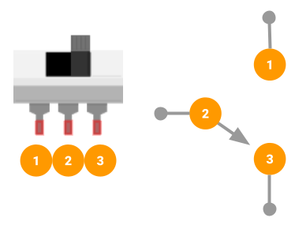

Project 1
LED There Be Light
By Gavin Nguyen and Dylan Vu
Overview
Every electrical engineer has to start somewhere; for you, it's no different. We'll stick with the classic beginner's project: You will build a basic LED circuit on a breadboard. Then, you will solder it onto a perfboard.
Because this is the very first project, let's walk through the layout of this webpage: The first section, “Concepts”, discusses the key details from the accompanying lecture that are most relevant to the project. The following section, “Requirements”, lists all the requirements your deliverable must meet for full marks. The “Parts” and “Schematics” sections show the components needed and the circuit schematics, respectively. Next, “Instructions” describe how to assemble the deliverables. Last but not least, the “Deliverables” section outlines exactly what you will submit in the Canvas course. This last section is only relevant to students participating in the course, but our online resources remain available to everyone.
Concepts
Breadboard

You will use a breadboard to prototype your circuits. Inside the breadboard are conductive metal strips.
When you insert components into holes of the same strip, current can flow between those components.
Closely follow the illustrations below to understand how current travels through the breadboard.
.png)
Remember to place a component’s terminals on different strips. If both terminals sit on the same strip, current will not flow properly through the component.
Ohm’s Law
V = IR
Ohm’s Law relates the voltage (V), current (I), and resistance (R) in a circuit.
Take the figure here as an example: Suppose we hold the voltage at a constant value. As the resistance increases, the current across the resistor decreases. In the opposite case, as resistance decreases, current increases.
We will use the formula to calculate a safe resistor value for our circuit. If our chosen resistance is too low, we risk inducing a high current that our components are unable to withstand. However, a resistance too high limits the current so that our LED is insufficiently powered.
Resistor
A resistor is a component that restricts the current flow. It has no polarity, meaning that its orientation in a circuit has no effect on the circuit. The resistance, the ability of a resistor to limit current flow, is measured in Ohms (Ω).
Reading Resistor Bands
The value of a resistor is determined by the color of each of its bands and the number of bands. Let’s take, for example, the four-band resistor:
The first two bands (red and black) represent the digits of the resistor value. The value of each digit can be decoded on the chart below. Referencing this chart, we find the digits are 20. The second-to-last band (yellow) represents a multiplier by which the digits are multiplied. In our case, we see that the multiplier is 104. The last band represents the tolerance, the maximum deviation of the actual resistance from the nominal resistance described by the bands. In our case, gold represents a tolerance of ±5%.
When we combine the digits, multiplier, and tolerance, we identify the resistor value as 200KΩ ±5%.
LED (Light Emitting Diode)
An LED is a component that emits light! Big surprise.
Just like other diodes, LEDs are polarized, which means their orientation does affect the circuit: Current only travels through an LED in one direction. It flows from the anode to the cathode terminal.
The LED also has a constant voltage drop between its terminals within normal operating conditions. The voltage is noted in the LED’s datasheet.
Slide Switch
 You will use a slide switch to control the current flow in the circuit. The sliding contact completes a connection with the middle terminal (pin 2) and one of the two outer terminals (pins 1 and 3).
The slider is shifted in the direction of the outer terminal actively connected to the middle terminal.
Soldering
Woah woah woah! Soldering is a bit more complicated than a two paragraph discussion. Head over to the workshop material here to learn more.
Requirements
- The circuit must work as implied by the schematic: A switch will toggle the LED ON and OFF.
- The circuit must be soldered to the perfboard.
- The LED must be brightly lit when toggled ON. A dim LED indicates poor soldering or an incorrect resistor value.
- The LED must be completely dark when toggled OFF.
Parts
| Part Name | Qty |
|---|---|
| Jumper Wire | X? |
| Breadboard | 1 |
| Battery, 9V | 1 |
| 9V Snap Connector | 1 |
| Header, 2.54mm, Female, 1x2 | 2 |
| LED, 3.2V | 1 |
| Slide Switch | 1 |
| Resistor, ?Ω | 1 |
| Perfboard | 1 |
Schematics

Instructions
Checkpoint 1
- We need to find an acceptable value for the resistor! Using the provided datasheet, find the forward voltage of the LED and the continuous forward current through the LED.
-
Determine the voltage across the resistor by subtracting the forward voltage of the LED from the battery’s voltage.
VResistor = VBattery - VLEDThis formula was derived from Kirchoff’s Laws, which you will explore in Lecture II.
-
Calculate the resistor value by plugging its voltage and the current into Ohm’s Law, solving for R.
Checkpoint 2
- Now that you have the correct resistor value, build the circuit on the breadboard, using the schematic as reference.
-
(Optional) Test the circuit with different resistor values, and observe how the brightness of the LED changes. Keep in mind that a low resistance may burn out the LED.
Checkpoint 3
-
Once you have successfully prototyped the circuit on your breadboard, build the same circuit on the perfboard. Solder
with care!
Do not solder the 9V snap connector to the protoboard. Instead, solder the female 1x2 header to the board. The snap connector will be inserted into the header’s pins.
Deliverables
Students enrolled in the course must submit the following deliverables to the corresponding Canvas course assignment.
Place the following files in a single folder:
-
Video of your soldered perfboard
The video should demonstrate the switch in both states (ON and OFF).Compress the folder to a zip file and rename the file using the format “ops_project#_lastname_firstname.zip” Then, submit the zip file to the Project 1 Canvas assignment.